| 场所 | 定位状态 | 地址 / 范围 | 图像参考 |
|---|---|---|---|
| 莫厘中学 | 源锚点可追溯 | 江苏省苏州市吴中区东山镇人民街62号 OpenStreetMap学校用地多边形的面积质心 | 4 张本地图 / 4 条参考 |
| 莫厘实验小学（紫金路校区） | 源锚点可追溯 | 江苏省苏州市吴中区东山镇紫金路45号（紫金路校区） OpenStreetMap紫金路校区学校用地多边形的面积质心 | 2 张本地图 / 2 条参考 |
| 东山首末站 | 源锚点可追溯 | 江苏省苏州市吴中区东山镇，洞庭路沿线（道路关系由官方公交走向确认；门牌未核定） OSM公交场站面way/1327188516的质心；非乘车站杆、非入口、非站房中心 | 0 张本地图 / 1 条参考 |
| 法海寺 | 源锚点可追溯 | 江苏省苏州市吴中区东山镇（官方名录精度；具体山坡、门牌未核定） OSM node/13800863490寺庙标签候选点；尚未核定对应文保本体、山门或大殿中心 | 1 张本地图 / 2 条参考 |
| 莫厘峰观景亭 | 源锚点可追溯 | 江苏省苏州市吴中区东山镇莫厘峰山地（精确道路门牌不适用） OSM node/13800809431，tourism=viewpoint标签点；不是经测量的亭柱/台基轮廓 | 2 张本地图 / 3 条参考 |
| 惠和堂 | 待核数值坐标 | 江苏省苏州市吴中区东山镇陆巷村文宁巷内 建筑群；当前以文献地址和相对空间关系定位 | 10 张本地图 / 10 条参考 |
| 紫石街及三元牌坊组 | 待核数值坐标 | 江苏省苏州市吴中区东山镇陆巷古村村落中心 街巷线及3个牌坊点；尚无测绘线形 | 4 张本地图 / 4 条参考 |
| 寒山港 | 待核数值坐标 | 江苏省苏州市吴中区东山镇陆巷古村 港道线／水面及岸线；坐标和全线待核 | 4 张本地图 / 4 条参考 |
初中校园
莫厘中学
位于东山镇人民街62号的初中校园。官方站点提供校门、教学楼庭院、木廊和运动场的实景照片；白墙、深色瓦屋面、园林式院墙与背后的山体是照片中可辨认的视觉要素。
源地块与邻路平面图 SVG ↗ · 北向、米制比例尺；不是实景照片或测绘总平面
OpenStreetMap学校用地多边形的面积质心 · 中：官网确认学校及地址，坐标和地块边界来自公众协作地图，未作测绘核验
2026-10-23重新读取OSM way/1101928343，标签amenity=school、name=莫厘中学；当时版本2，编辑时间2024-10-22T08:57:03Z。；以OSM节点坐标作平面多边形鞋带公式计算，先平移原点减少浮点抵消，得到[120.39730490449581,31.08426756002144]；本记录保留9位小数。；该坐标为校园地块质心，不是校门点、教学楼点或经实测的建筑锚点。；学校地址依据moli-middle-home及moli-middle-intro；不可直接混用国内网络地图的GCJ-02或BD-09坐标。；OSM地块范围约为经度120.3961839至120.3983065、纬度31.0835220至31.0850349；仅供后续边界核查。
客观信息与出处
- 学校官网站群导航将莫厘中学列在初中类别，并在页脚列出人民街62号地址。2026-10-23访问，页面未注明整体更新时间 · 官方页面直接记载
莫厘中学官方网站首页 ↗ - 学校简介记载始创于1937年，2009年3月经吴中区人民政府批准分设为吴中区东山莫厘中学。页面未注明发布日期；2026-10-23访问 · 官方页面直接记载；历史信息
学校简介：流清林香 绝佳书房——苏州市吴中区莫厘中学简介 ↗ - 官网首页轮播包含四张校园实景：庭院与景石、校门、碑刻长廊、运动场；图片上叠加学校文化文字。2026-10-23访问；拍摄日期未知 · 官网原图逐张目视核查
莫厘中学官方网站首页 ↗ - 官网的“校园风光”目录在访问时显示“暂无资料”，本次实景参考取自首页轮播，而非该空目录。2026-10-23 · 访问时页面状态
校园风光_学校概况_学校_莫厘中学 ↗
参考图与空间特征
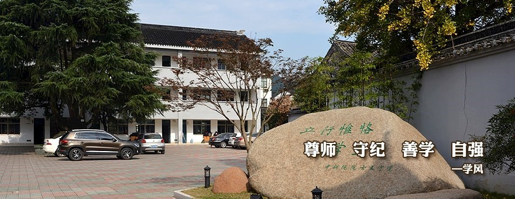
- 白色三层建筑可见，深色坡屋面。
- 庭院为红灰相间铺装，右侧有白墙瓦顶院墙与大型景石。
- 树木遮挡部分立面，图中可见停车车辆；不能从该图确定完整建筑轮廓。
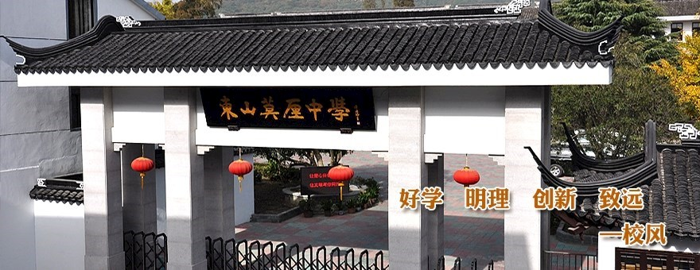
- 灰色柱体、白色墙面，深色瓦顶屋脊与翘起的檐角。
- 黑底牌匾可辨“东山莫厘中学”字样，门内外可见红灯笼。
- 只显示门楼与相邻院墙局部；门外道路方向与精确校门坐标仍待核定。
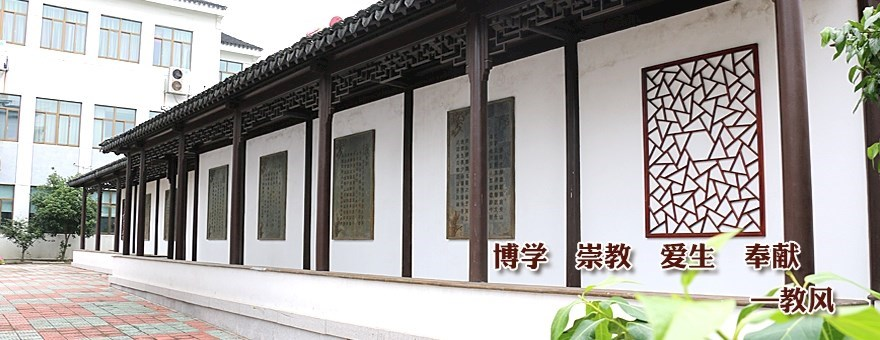
- 深色木构外观长廊、瓦屋面、白墙，墙上镶有碑刻与几何纹样漏窗。
- 左后方可见白色教学楼的多层立面。
- 图中长廊位置尚未与OSM内具体建筑配对。
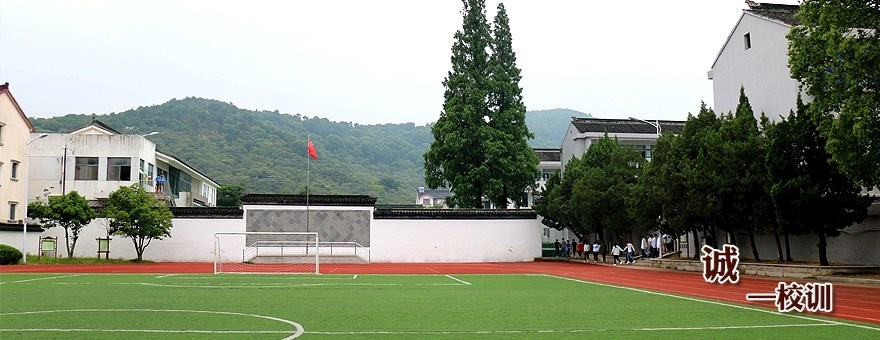
- 前景为绿色运动场，边缘可见红色跑道与白色足球门。
- 两侧为白色校园建筑，中间有白色围墙；后方为连续覆盖植被的山体。
- 不能由单张照片推得标准足球场尺寸、跑道圈数或山峰名称。
待补信息
- 缺带方位与比例的校园总平面、各楼栋名称和精确建筑高度。
- 未取得校门WGS84点位；当前坐标只能用于学校地块级定位。
- 官网轮播图片无拍摄时间，后续建模前需核查近期外立面及运动场是否变化。
- 树种和植物配置不能由这些低分辨率轮播图可靠鉴定。
来源目录与检索记录
- 莫厘中学官方网站首页 ↗苏州市吴中区莫厘中学 · 页面未标日期 · 核查 2026-10-23 · 学校官方网站；地址与校园原图
- 学校简介：流清林香 绝佳书房——苏州市吴中区莫厘中学简介 ↗苏州市吴中区莫厘中学 · 页面未标日期 · 核查 2026-10-23 · 学校官方简介
- 校园风光_学校概况_学校_莫厘中学 ↗苏州市吴中区莫厘中学 · 页面未标日期 · 核查 2026-10-23 · 学校官方图片目录；访问时暂无资料
- OpenStreetMap way 1101928343：莫厘中学 ↗OpenStreetMap contributors · 2024-10-22（所读取地块版本的编辑日） · 核查 2026-10-23 · 公众协作地图地块与节点；不属于官方测绘
- 先用联网搜索定位官方wxedu.net站点并打开官网首页；进一步从官网正常导航读取学校简介与校园风光页。
- web浏览器对部分学校子页返回Cache miss，随后直接读取同一公开HTTPS页面成功，未使用账号、未绕过访问限制。
- 所有图片均来自已打开的官方首页HTML的img src，未以搜索缩略图作实体证据。
- 原始网页与OSM API响应已保存到sources目录；OSM内容按ODbL归属OpenStreetMap contributors。
小学校园
莫厘实验小学（紫金路校区）
本条落位指东山镇紫金路45号的紫金路校区；学校另有位于杨湾村、邻明善堂的幼山校区。本次已收集官网明确对应两校区的两张照片，紫金路校区校门照片可作本图幅建模参考，幼山照片单列防止混用。
源地块与邻路平面图 SVG ↗ · 北向、米制比例尺；不是实景照片或测绘总平面
OpenStreetMap紫金路校区学校用地多边形的面积质心 · 中：官方简介与教育部门入学信息确认校区及地址，坐标和地块边界来自公众协作地图，未作测绘核验
2026-10-23重新读取OSM way/1327190550，标签amenity=school、name=江苏省实验小学莫厘实验小学；当时版本1，编辑时间2024-10-22T09:08:12Z。；以OSM节点坐标作平面多边形鞋带公式计算，先平移原点减少浮点抵消，得到[120.40173229978949,31.080852188614372]；本记录保留9位小数。；该坐标为紫金路校区校园地块质心，不是校门点，也不代表幼山校区。；紫金路45号据2022年吴中区教育部门入学服务信息；官网校门原图可辨45号门牌，可作相互核对。；幼山校区地址为东山镇杨湾村，官方简介称邻明善堂；本轮未为幼山校区填入未经核实的精确坐标。；OSM地块范围约为经度120.4008254至120.4028678、纬度31.0799790至31.0817250；仅供后续边界核查。
客观信息与出处
- 官方学校简介明确小学部由紫金路校区和幼山校区组成。页面未注明发布日期；2026-10-23访问 · 官方页面直接记载
学校简介_学校概况_苏州市吴中区莫厘实验小学 ↗ - 2022年吴中区小学入学服务信息列本部地址为东山镇紫金路45号，幼山校区地址为东山镇杨湾村。2022年 · 官方教育部门历史服务信息；地址与官网照片交叉核对
2022年吴中区小学入学服务信息 ↗ - 官方简介记载紫金路校区占地13360平方米、建筑面积6065平方米；幼山校区占地5718平方米、建筑面积1791平方米。页面未注明发布日期；2026-10-23访问 · 官方页面直接记载；资料年代未标明，不能视作2026实测
学校简介_学校概况_苏州市吴中区莫厘实验小学 ↗ - 官方简介称幼山校区位于杨湾古村、与明善堂为邻；该校区与本图幅紫金路校区不是同一处校园。页面未注明发布日期；2026-10-23访问 · 官方校区说明与地址相互印证
学校简介_学校概况_苏州市吴中区莫厘实验小学 ↗ · 2022年吴中区小学入学服务信息 ↗ - 官网简介第一张照片紧接紫金路校区段落，显示校门和45号门牌；第二张紧接幼山校区段落，显示篮球场及教学楼。2026-10-23访问；拍摄日期未知 · 页面图文对应关系与原图逐张目视核查
学校简介_学校概况_苏州市吴中区莫厘实验小学 ↗
参考图与空间特征
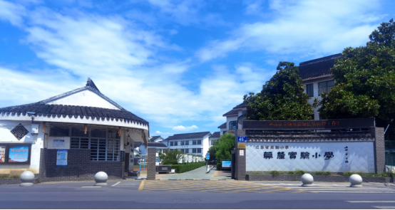
- 左侧门卫建筑有白色山墙、深色瓦顶，外墙下部为深灰色。
- 右侧白色菱形纹理校名墙可辨“莫厘实验小学”；门柱有45号门牌。
- 入口铺装通向内部校园，后方可见白色多层建筑与树木。
- 无法由这一视角确定校园完整总平面、各楼栋高度或入口的精确方位角。
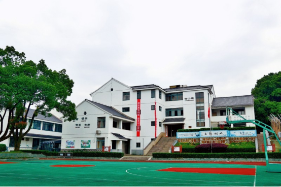
- 前景可见绿色篮球场、红色场区及篮球架。
- 背后为白色多层教学建筑，深色瓦顶；中央有通向二层的平台与台阶。
- 左侧大树遮挡部分教学楼，画面中可见校园绿化。
- 校区归属根据官方简介紧邻幼山段落的位置判定；不据此推算紫金路校区形态。
待补信息
- 紫金路校区缺航拍、带比例总平面及教学楼各向立面；现有原图分辨率较低。
- 校门精确WGS84坐标与朝向尚未核定。
- 幼山校区作为异地校区仅保存对照资料，未核定精确点位；不可套用本条主坐标。
- 官网简介未标注统计年份，面积为页面记载值，需与近期校园边界和建设变化复核。
来源目录与检索记录
- 学校简介_学校概况_苏州市吴中区莫厘实验小学 ↗苏州市吴中区莫厘实验小学 · 页面未标日期 · 核查 2026-10-23 · 学校官方简介与两校区实景原图
- 2022年吴中区小学入学服务信息 ↗吴中教育热线（苏州市吴中区教育部门网站） · 2022（标题年份，具体日期未显示） · 核查 2026-10-23 · 官方教育部门入学服务信息；两校区地址
- OpenStreetMap way 1327190550：江苏省实验小学莫厘实验小学 ↗OpenStreetMap contributors · 2024-10-22（所读取地块版本的编辑日） · 核查 2026-10-23 · 公众协作地图地块与节点；不属于官方测绘
- 联网搜索并打开学校官方简介及吴中教育部门入学服务信息；以官方图文对应关系区别两校区。
- 所有图片均提取自已打开官方简介HTML的img src，未使用搜索缩略图。
- 简介HTML的图片原始链接为HTTP；HTTP请求返回403，改用同站同路径的标准HTTPS地址后公开下载成功，未使用凭证或变更内容路径。
- 原始学校简介HTML、OSM公开API响应和两张官网图片均已保存；图片只做内部参考。
- OSM内容按ODbL归属OpenStreetMap contributors；OSM为公众协作数据，不能代替测绘成果。
公交首末站／公交场站
东山首末站
苏州市吴中区东山镇的公交始发、终到与换乘节点。已存WGS84场站面质心和官方线路走向依据；现有证据尚不能重建站房、车道、站台和出入口形态。
源地块与邻路平面图 SVG ↗ · 北向、米制比例尺；不是实景照片或测绘总平面
OSM公交场站面way/1327188516的质心；非乘车站杆、非入口、非站房中心 · 中：场站面可追溯，未经现场测量或独立影像配准
质心使用项目已有2026-10-19 OSM抽取快照；来源文件：东山镇_数据/osm/layers/places_admin_poi.geojson，原始响应poi.json快照时间2026-10-19T10:25:21Z。；OSM标签amenity=bus_station、public_transport=station、bus=yes；面几何不等于测绘或法定用地边界。；高德BV10131723页面所列公交站点坐标31.082960,120.411018属于平台站点记录，本批不将其作为场站质心，不与WGS84直接混用。；后续落模仍需核验场站面与实际入口、站房、停车坪的对应。
客观信息与出处
- 苏州市交通运输局2018年624路调整公告将起始走向写为东山首末站—洞庭路—环山公路，证实场站与洞庭路的道路联系。2018-04-04 · 官方历史文字已核验；不代表2026全线路现状
关于624、581路优化调整的公告 ↗ - 苏州市政府转载苏州日报2025年报道：公交集团吴中公司与东山镇政府优化助农专线，东山首末站是拟新增木渎地铁站定制公交的始发节点。2025-08-08 · 官方报道已核验；用作站场功能依据
公交助农专线升级 荷农赶集将有定制公交 ↗ - 现有OSM将此对象画为公交场站面，而非单个公交停车站点。2026-10-19 · 开源地图标签已核验；非官方测绘
东山首末站：OpenStreetMap way 1327188516 ↗
参考图与空间特征
- 可复核OSM对象身份及周边空间关系。
- 本批没有下载商业卫星底图；不能据此确认站房外立面。
待补信息
- 可验证的站场全景、站房正面、出入口和候车区照片。
- 站房建筑轮廓、层数、屋顶、停车坪与站台布局、车辆出入口方向。
- 官方门牌和现状场站边界；高德公交上车点与OSM场站面是否属于同一设施的具体分工。
来源目录与检索记录
- 东山首末站：OpenStreetMap way 1327188516 ↗© OpenStreetMap contributors · 页面未标日期 · 核查 2026-10-23 · open_geodata；坐标实际读取本地2026-10-19快照
- 关于624、581路优化调整的公告 ↗苏州市交通运输局 · 2018-04-04 · 核查 2026-10-23 · official_transport_notice
- 公交助农专线升级 荷农赶集将有定制公交 ↗苏州市人民政府；来源苏州日报 · 2025-08-08 · 核查 2026-10-23 · official_republished_report
- 东山首末站(公交站) ↗高德地图 · 页面未标日期 · 核查 2026-10-23 · commercial_map_stop_record；仅用于记录同名站点差异
- 东山首末站 Map — Bus station ↗Mapcarta / OpenStreetMap · 页面未标日期 · 核查 2026-10-23 · secondary_map_view
- {"date":"2026-10-23","queries":["\"东山首末站\" \"地址\"","\"东山首末站\" 照片","\"东山首末站\" \"站场\"","\"东山首末站\" site:szgj.org.cn"],"result":"官方交通公告和助农专线报道可确认功能、洞庭路联系；未检得可核验站房/站坪全景。"}
- {"date":"2026-10-23","queries":["\"东山首末站\" \"图片\" -2026版 -妙搜 -站台"],"result":"多数结果为线路查询、旅行攻略或公交站点聚合；不把公交车辆/荷花市集照片冒充站场照片。"}
- {"date":"2026-10-23","queries":["OSM way/1327188516 与本地GeoJSON核对"],"result":"已读取本地完整面和标签；经纬度保留原始精度仅为溯源，不表明厘米级精度。"}
佛教寺庙／历史古建筑
法海寺
资料对象为苏州东山法海寺，官方文保名录仅确认东山镇、清代古建筑、市级文物保护单位。本批保留OSM候选点位及一张正面照候选；二手资料的西坡记述与OSM点相对峰顶的方位不一致，点位、文保本体和照片尚未完成对应核验。
OSM node/13800863490寺庙标签候选点；尚未核定对应文保本体、山门或大殿中心 · 中低：OSM点可追溯，但与二手西坡记述存在方位冲突；官方名录不足以验证这一具体点位
项目已有2026-10-19 OSM快照将其标为amenity=place_of_worship、religion=buddhist。；官方文保名录地址精度到东山镇；相约久久记述西坡下法海坞，不能据此直接给OSM点赋西坡地址。；本地莫厘峰峰顶OSM node/13800809445为[120.3894991,31.1003028]；法海寺候选点相对该峰顶约向东226米、向南588米，属于东南方向，与二手西坡字面记述不一致。；本轮未找到可解释该冲突的带坐标官方寺址、现场导览图或可配准影像；山域名称差异、地名沿革或OSM误标均未证实，不任选一种解释。；本条不采用北京石景山法海寺、福州法海寺、青岛法海寺的图文。；不把相传隋代创寺视为现存殿宇建造年代。
客观信息与出处
- 苏州市文化广电和旅游局文物保护单位名录：法海寺，市保，吴中区，清代，东山镇，公布日期1986年3月25日，类型古建筑。2026-10-23 · 官方名录已核验
苏州市各级文物保护单位名录（法海寺，第156项） ↗ - 相约久久苏州东山景区法海寺图文页将该寺置于莫厘峰西坡下法海坞，并讲述隋代莫厘将军舍宅建寺的传说；本批仅将其作为地理和历史线索。 · 二手记述；西坡方位与OSM候选点相对峰顶的位置冲突，传说不视为可核实建造事实
苏州东山景区旅游攻略之法海寺（图文） ↗ - 低分辨率图像可见灰瓦坡屋顶、外露檐部、红褐色门柱、居中的门洞与前部台阶；只能辅助外观研究，不能据此量取尺寸或确认全寺布局。2026-10-23 · 已下载并目视核验；照片与OSM点尚未配准，拍摄年代未知
苏州东山景区旅游攻略之法海寺（图文） ↗ - OSM点标明佛教礼拜场所；官方风景资源介绍亦列举东山现存法海寺。2026-10-23 · 支持东山存在此名称的寺庙；不能据此证明文保本体与OSM候选点相同
法海寺：OpenStreetMap node 13800863490 ↗ · 东山景区（太湖风景名胜区资源版） ↗ - 按本地WGS84坐标比较，法海寺候选点位于莫厘峰峰顶标签点东南约630米；向东约226米、向南约588米。该计算只描述两个OSM点的相对方位，不判断哪一来源正确。2026-10-23 · 本地坐标比较；发现与二手西坡记述的冲突，待交叉核验
法海寺：OpenStreetMap node 13800863490 ↗ · 莫厘峰：OpenStreetMap node 13800809445（仅作方位核对） ↗
参考图与空间特征
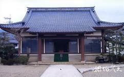
- 图片由明确标注苏州东山法海寺的图文页链接，文件242×150像素。
- 可见灰瓦坡屋顶、红褐门柱、中央门洞、台阶及两侧植被。
- 图片存在网站水印；低分辨率不足以可靠读匾额、分析斗拱或认定现存建筑年代。
- 搜索索引明确题为吴中区东山镇法海寺香花桥，并列两幅图片。
- 页面索引称桥初为明代所建、现为新建；本批未获得可目视图像，不写入实证外观。
待补信息
- 优先核验位置冲突：二手图文的莫厘峰西坡下法海坞，与OSM候选点相对峰顶位于东南不一致。需官方寺址或文保范围图、现场带定位照片等建立同一性，当前点位不得直接作为已确认法海寺落模锚点。
- 官方精确地址、院落边界、山门／主殿锚点、主轴方向和殿宇尺寸。
- 现状多角度高清照片、拍摄年份，以及低分辨率照片所示殿宇与现存主殿的对应。
- 香花桥、泉池、寺与周边墓区的现状空间关系；不能用古代繁盛描述复原当代建筑群。
- 文保本体与寺庙登记/开放状态的完整官方说明。
来源目录与检索记录
- 法海寺：OpenStreetMap node 13800863490 ↗© OpenStreetMap contributors · 页面未标日期 · 核查 2026-10-23 · open_geodata；坐标实际读取本地2026-10-19快照
- 莫厘峰：OpenStreetMap node 13800809445（仅作方位核对） ↗© OpenStreetMap contributors · 页面未标日期 · 核查 2026-10-23 · open_geodata；实际读取东山镇_数据/osm/layers/landuse_natural.geojson，原始landcover.json快照2026-10-19T07:25:03Z
- 苏州市各级文物保护单位名录（法海寺，第156项） ↗苏州市文化广电和旅游局 · 页面未标日期 · 核查 2026-10-23 · official_heritage_register
- 苏州东山景区旅游攻略之法海寺（图文） ↗相约久久旅游网 · 页面未标日期 · 核查 2026-10-23 · secondary_travel_photo_page
- 东山景区（太湖风景名胜区资源版） ↗太湖风景名胜区资源版 · 页面未标日期 · 核查 2026-10-23 · scenic_area_resource
- 吴中区东山镇法海寺香花桥 ↗中国桥 · 页面未标日期 · 核查 2026-10-23 · local_bridge_photo_catalog；本次网页正文未成功载入
- {"date":"2026-10-23","queries":["\"法海寺\" \"莫厘\" \"图\"","\"法海寺\" \"东山\" 照片","site.suzhou.gov.cn \"法海寺\"","site.szwz.gov.cn \"法海寺\"","\"法海寺\" \"碧螺村\" 文物","\"法海寺\" \"东山\" \"文物保护\" \"苏州市\""],"result":"找到市文旅局官方文保名录，以及相约久久与中国桥候选图；严格排除北京、福州、青岛同名寺庙。"}
- {"date":"2026-10-23","queries":["相约久久法海寺图像链接提取与普通公开图片下载"],"result":"下载到images/fahai-temple-meet99-reference.jpg并目视核验；图像仅242×150，定位和现状仍需补证。"}
- {"date":"2026-10-23","queries":["中国桥香花桥候选页普通HTTPS读取"],"result":"web工具多次超时，普通请求提示证书名称/链错误；未跳过TLS验证，保留页面候选。"}
- {"date":"2026-10-23","queries":["本地landuse_natural.geojson峰顶node/13800809445与法海寺node/13800863490坐标方位比较","\"法海寺\" \"法海坞\" \"莫厘峰\" 西坡","\"法海寺\" \"莫厘峰\" \"东南\"","\"法海寺\" \"莫厘峰\" site:suzhou.gov.cn"],"result":"确认候选寺点相对本地峰顶在东南约630米，与meet99西坡记述存在字面冲突；未找到带坐标的一手依据可解释冲突。已下调定位可信度，官方地址只保留东山镇，不将猜测解释写为事实。"}
观景点／山地亭阁
莫厘峰观景亭
OSM记录了莫厘峰观景亭点。官方近年报道另称莫厘峰近山顶有八角亭观景台，2021政府采购也记录八角亭周边林相改造；本批尚无证据证明这些名称对应同一座亭。已存点位及两幅步道、山顶视域环境照片。
OSM node/13800809431，tourism=viewpoint标签点；不是经测量的亭柱/台基轮廓 · 中低：名称与坐标来自单一OSM点；八角亭名称、具体亭体对应待核验
OSM原始标签direction=290，属观景方向信息，不能当作亭体旋转角或建筑朝向。；点来源于项目2026-10-19 OSM快照；坐标精度不代表现场测量精度。；2025年苏州日报报道和2021采购地块均可确认莫厘峰八角亭这个地物名称，但缺乏带坐标导览图或同景对照，故不将八角亭写入别名。；2021采购设计海拔215–265米属于亭周边林下改造地块范围，不能赋给OSM点作为亭基标高。
客观信息与出处
- OSM将莫厘峰观景亭标为tourism=viewpoint，direction=290。2026-10-19 · 开源地图标签已核验；未现场测量
莫厘峰观景亭：OpenStreetMap node 13800809431 ↗ - 苏州日报2025年报道说莫厘峰接近山顶处有八角亭观景台，可眺望太湖；该描述尚不能证明它与本记录OSM点同一。2025-10-08 · 官方转载报道已核验；同一性未确认
徒步莫厘峰郊野公园，太湖风光入画来 ↗ - 2021年政府采购说明将八角亭林相改造地块置于莫厘峰南侧防火通道上坡、马尾松林下区域，地块约2万平方米，海拔215–265米、坡度20–40度。2021-03-30 · 官方采购设计文字；是地块范围，非亭体测绘
东山镇莫里峰（八角亭）林相改造工程，项目SZJL2021-WZ-C-003（采购公告、成交与合同聚合页） ↗ - 同一采购设计提出在八角亭及大尖顶地块补植映山红；这说明当地地被和灌木可能包含有计划的人为营造，不能仅按自然群落假设。2021-03-30 · 官方设计意图；未核验2026存活/分布现状
东山镇莫里峰（八角亭）林相改造工程，项目SZJL2021-WZ-C-003（采购公告、成交与合同聚合页） ↗ - 苏州日报2026年图文中，署名朱雪芬的森林步道照片显示硬质步道、两侧边沟/路缘及针阔叶混合林；俯瞰太湖照片显示灌草前景、疏松树冠、山下聚落和湖面。两图均未出现可辨亭体。2026-05-03 · 已下载并目视；是环境参考，非亭体定位证据
五一来东山徒步，松弛感拿捏~ ↗
参考图与空间特征
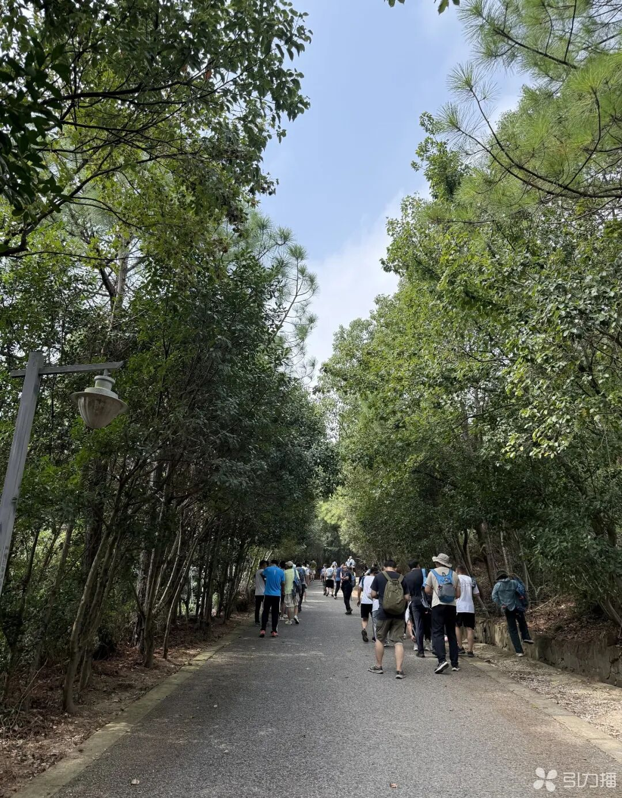
- 照片1080×1385，灰色硬质步道，两侧窄沟/路缘，游人可提供粗略视觉尺度。
- 可辨针叶枝条与阔叶树冠，林下局部裸地、落叶，树木非均匀网格。
- 不能仅凭照片精确鉴定全部树种或把道路宽度量化。
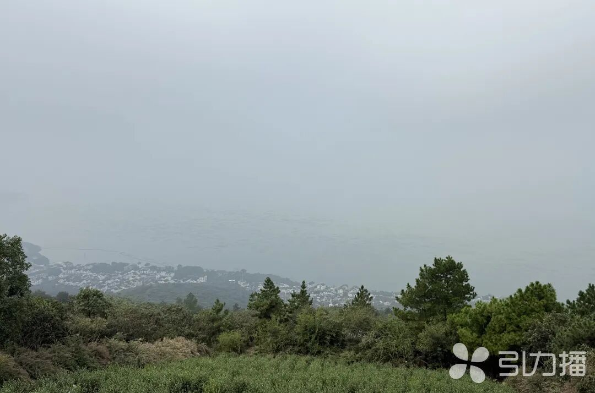
- 照片1080×714，前景灌草及松形树冠，中景村落，背景为湖面。
- 有明显空气透视和雾霭；可用作山顶视域层次、植被覆盖的视觉参考。
- 图中没有亭体，不能用于认定八角亭/观景亭的形制、颜色和坐标。
- 搜索索引提及到达八角亭观景台，页面含多幅图片。
- 直接打开为JavaScript应用壳，尚未建立图文对应，未下载或用作亭体依据。
待补信息
- OSM莫厘峰观景亭与官方八角亭观景台的同一性证据（带坐标导览图、定位现场照或可匹配航片）。
- 亭体近景/侧景、柱数、屋顶层数与形制、台基及护栏、材料颜色、约略尺度和朝向。
- 2021林相改造地块边界及现状映山红、马尾松覆盖；采购设计不能当作2026逐株现状。
- 两张环境照片的原始拍摄日期、机位与朝向（发布日期已知，EXIF位置未核验）。
来源目录与检索记录
- 莫厘峰观景亭：OpenStreetMap node 13800809431 ↗© OpenStreetMap contributors · 页面未标日期 · 核查 2026-10-23 · open_geodata；坐标实际读取本地2026-10-19快照
- 徒步莫厘峰郊野公园，太湖风光入画来 ↗苏州市人民政府；来源苏州日报 · 2025-10-08 · 核查 2026-10-23 · official_republished_report
- 徒步莫厘峰郊野公园，太湖风光入画来（可读全文转载） ↗中共江苏省委新闻网；来源苏州日报 · 2025-10-08 · 核查 2026-10-23 · official_republished_report_same_article
- 东山镇莫里峰（八角亭）林相改造工程，项目SZJL2021-WZ-C-003（采购公告、成交与合同聚合页） ↗苏州政府采购；采购单位苏州市吴中区东山镇农林服务站 · 2021-03-30 · 核查 2026-10-23 · official_procurement_design；聚合页另含2021-04-14成交及2021-04-21合同
- 五一来东山徒步，松弛感拿捏~ ↗苏州日报供稿，新浪转载；相关照片朱雪芬摄 · 2026-05-03 · 核查 2026-10-23 · identified_reporter_photography_republication
- 五一来东山徒步，松弛感拿捏~（转载页链接的原始微信来源） ↗苏州日报微信公众号 · 2026-05-03 · 核查 2026-10-23 · original_report_link；本次无法直接读取
- 太湖徒步·莫厘听涛 | 登顶东山莫厘峰 ↗游侠客 · 页面未标日期 · 核查 2026-10-23 · commercial_route_photo_candidate
- {"date":"2026-10-23","queries":["\"莫厘峰\" \"八角亭\"","\"莫厘峰八角亭\" 照片","\"莫厘峰\" \"八角亭\" 图片","\"莫厘峰\" \"亭\" \"照片\" 观景"],"result":"检得2025官方新闻、2021官方采购设计，以及苏州日报2026图文；尚无可靠亭体外形/坐标闭环。"}
- {"date":"2026-10-23","queries":["图片检索：莫厘峰 八角亭"],"result":"通用图像搜索返回多个台湾/北京等异地亭阁，均排除，不用泛化相似亭照片填补。"}
- {"date":"2026-10-23","queries":["苏州日报2026-05-03图注及图片地址核对"],"result":"保留2张署名现场环境照并目视；不使用图中不存在的亭阁信息。"}
- {"date":"2026-10-23","queries":["2021政府采购聚合页"],"result":"web搜索索引能读取完整设计范围与种植文字，直接open有超时；保留原链接与明确时点。"}
- {"date":"2026-10-23","queries":["原始苏州日报微信公众号和游侠客图页"],"result":"微信原文不可直接读取，游侠客直接打开为JavaScript壳；保留链接，不绕过访问限制。"}
传统宅园／纪念馆
惠和堂
位于东山镇陆巷古村文宁巷内，坐北面南，三路五进的大型厅堂宅园。已取得来源明确的平面图、俯瞰、局部书楼与园林参考。
建筑群；当前以文献地址和相对空间关系定位 · 地址与朝向有机构文字支持；地理坐标/占地界线待核
吴文化博物馆文字明示文宁巷及坐北面南；机构来源足以支持朝向，区别于从照片推测。；论文图1将惠和堂标在紫石街东侧、文宁巷附近；住建厅主办网站的传统建筑分布图亦标出惠和堂及邻近怀古堂。；两张分布图和旧平面/俯瞰均无可用CRS，未把示意图坐标或像素坐标转写成经纬度。
客观信息与出处
- 官方园林名录认定为王鏊故居；现为王鏊纪念馆。2025-10-20 · 来源直接记载
惠和堂 ↗ - 园林名录给出占地5000平方米、建筑面积3000平方米，三路五进；这些是文字资料面积，非本次量测。2025-10-20 · 来源直接记载
惠和堂 ↗ - 宅院坐北面南，高墙围合；分东、中、西三路，各进以天井相隔，路间有备弄相通。2021-11-23 · 来源直接记载
吴县繁华如许｜遍览世间乐土：自适与宅院 ↗ - 中路为轿厅、大厅、前后住楼；西路有客房、花厅与书楼，东路有门第、仆房、账房等。2021-11-23 · 来源直接记载
吴县繁华如许｜遍览世间乐土：自适与宅院 ↗ - 书楼名静观楼，在西路第三进；正厅与前住楼之间用穿堂和两方蟹眼天井组织空间。2021-11-23 · 来源直接记载
吴县繁华如许｜遍览世间乐土：自适与宅院 ↗ - 论文图1及传统建筑分布图可互证惠和堂、文宁巷、紫石街的相对关系；这不是已验证的现状坐标。2019–2020文献图件 · 文献图件相对关系
社区参与模式下的传统村落旅游空间生产及影响初探——基于苏州东山陆巷古村的调研 ↗ · 苏州市东山镇陆巷村陆巷 ↗
参考图与空间特征

- 可见园池、叠石、小桥、廊亭、树木。
- 用于园林水石植被关系，允许合并小构件。

- 可见灰瓦屋面、山墙轮廓、木栏与植物攀覆。
- 优先提取屋顶/山墙轮廓；攀覆植物不等同永久建筑形态。

- 可见开敞柱间、飞檐、栏杆、池岸叠石。
- 可压缩为檐顶、立柱、栏杆和池岸四类体块。

- 可见连续墙檐、山墙、叠石、铺地与开花植物。
- 供局部材质和植物点景参考，拍摄季节未确认。

- 清楚显示多路院落、天井、屋顶和侧园；图有吴文化博物馆水印。
- 可提取相对布局、轮廓和粗略长宽关系；无坐标、比例尺，不是正射测绘成果。

- 平面线条、院落和部分建筑标注可读；图有吴文化博物馆水印。
- 可读院落关系，未见尺寸链、坐标和比例尺；不作为精确测绘图。

- 清楚显示木柱、廊道、天井留空、墙面和室内外关系；图有博物馆水印。
- 用于体块留空、材质和穿堂关系，不要求逐件建模。
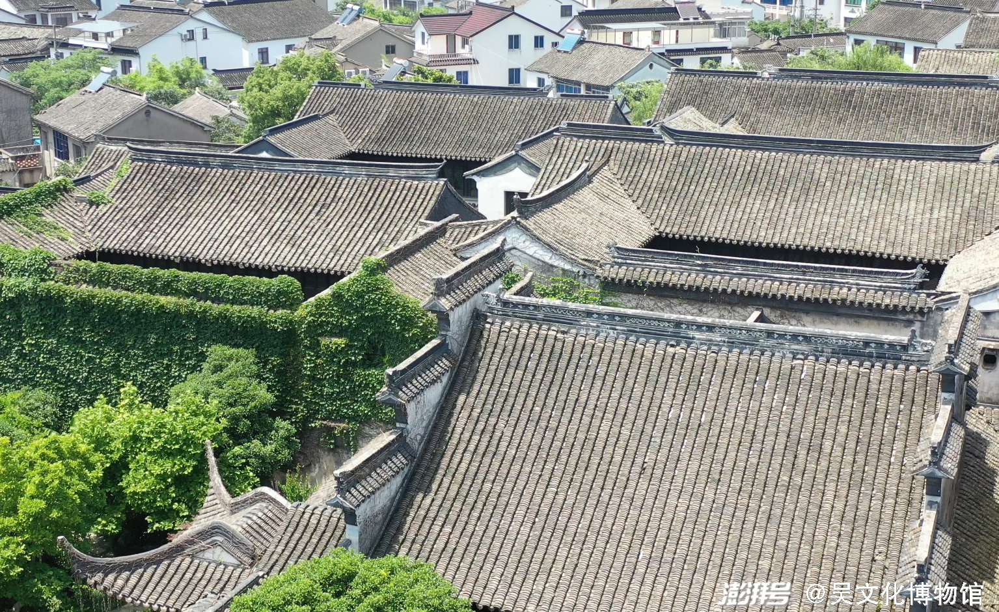
- 原页面题注为惠和堂书楼；可见高低错落的瓦屋顶、山墙和院内藤蔓。
- 图带吴文化博物馆水印，无比例尺；拍摄日期和镜头方向未明，不从画面量测高度或真北。
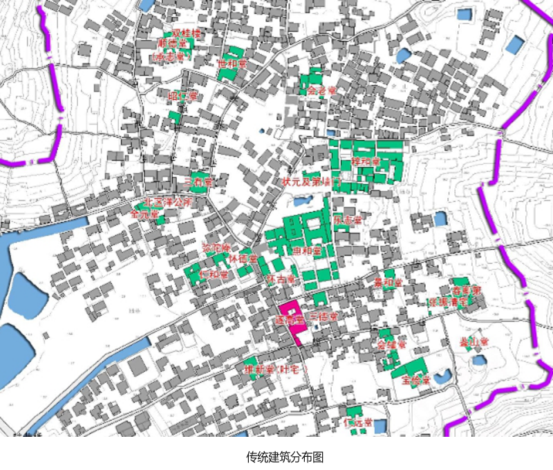
- 惠和堂、怀古堂、三有堂、宝俭堂等以文字和着色建筑范围标出；可查相对位置与院落轮廓。
- 底图有港道和街巷，但无可读坐标、北箭头或比例尺；原图字形小，不能当精确地籍边界。
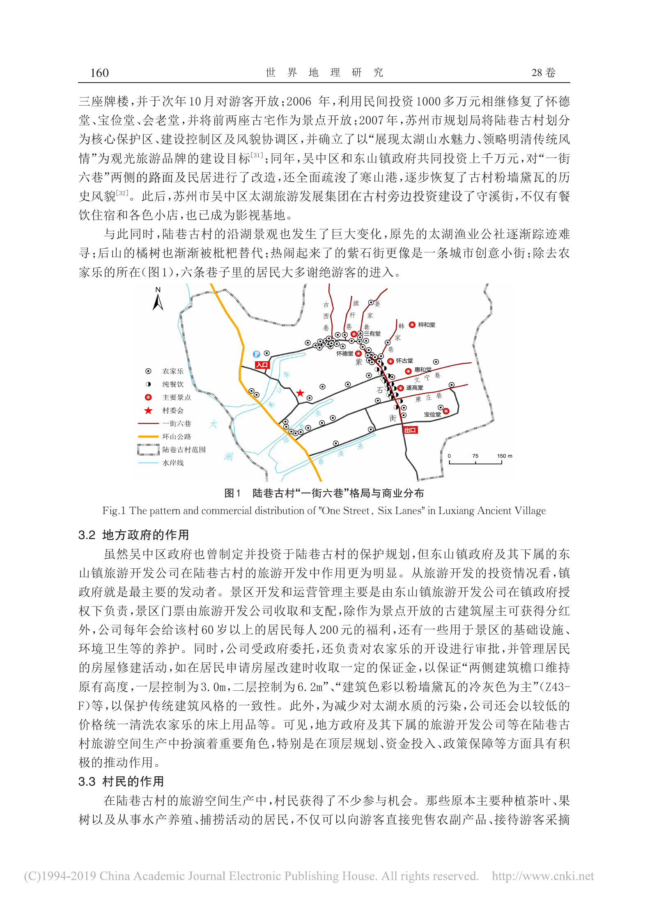
- 图1有北箭头和0–150 m比例尺；红线标一街六巷，蓝线标水岸，橙线为环山公路。
- 可辨紫石街、文宁巷、康庄巷及惠和堂位置；村落西侧为太湖，三个港道分别通向湖侧。
- 这是2019论文中的示意地图，未给CRS、基准点或测绘精度；可做历史相对空间关系，不输出精确WGS84线形。
待补信息
- 可靠的WGS84/CGCS2000锚点或已明确坐标系的地图POI。
- 现状建筑群围墙/占地界线、入口精确位置。
- 各单体高度、屋脊标高与尺寸链。
- 俯瞰/平面图与2026现状的一致性，尤其园林及附房变化。
来源目录与检索记录
- 惠和堂 ↗苏州市园林和绿化管理局 · 2025-10-20 · 核查 2026-10-23 · government-garden-register
- 吴县繁华如许｜遍览世间乐土：自适与宅院 ↗吴文化博物馆（澎湃号发布） · 2021-11-23 · 核查 2026-10-23 · museum-institutional-article
- 苏州市东山镇陆巷村陆巷 ↗江苏省住房和城乡建设厅主办·农房建设服务网 · 2020-08-21 · 核查 2026-10-23 · government-hosted-planning-and-village-archive-summary
- 社区参与模式下的传统村落旅游空间生产及影响初探——基于苏州东山陆巷古村的调研 ↗孔翔、吴栋、张纪娴；《世界地理研究》28(6):156–165；华东师范大学网站托管 · 2019-12 · 核查 2026-10-23 · primary-field-research-paper
- 2026-10-23已重新打开园林局名录、吴文化博物馆原文及住建厅主办图文，复用7张旧图而不重复下载。
- 新增1张书楼视角与2种空间分布图；未找到有明确CRS的本场所精确坐标，wgs84留空。
历史街巷／石牌坊组
紫石街及三元牌坊组
陆巷古村的主街与道路枢纽，文献记为南北走向，与六条横巷组成街巷骨架。街上保留纪念王鏊科举经历的解元、会元、探花三座牌坊。
街巷线及3个牌坊点；尚无测绘线形 · 文献起讫与方向明确；现状线形、牌坊坐标待核
2020住建厅主办网页记：南起蒋湾浜场，北至寒山庵，呈南北走向；六条横巷在紫石街东侧，与其顺序相接。；同页列六巷为古西巷、旗杆巷、姜家巷、韩家巷、文宁巷、康庄巷；论文图1可辨这套骨架。；不得将陆巷入口牌楼、木构过街楼和三元石牌坊合并为同一对象。
客观信息与出处
- 2020文献称紫石街始建于明代中期，南北向，长约里许、宽约2米；该尺寸是文献概述，不作为全街恒定净宽或2026实测。2020-08-21 · 文献记载的历史尺度
苏州市东山镇陆巷村陆巷 ↗ - 主街与其东侧六条横巷组成“一街六巷”格局，是古村道路枢纽。2020-08-21 · 来源直接记载
苏州市东山镇陆巷村陆巷 ↗ - 地方志列紫石街上的三座牌坊为解元、会元、探花，纪念王鏊的科举经历。2026-09-24 · 来源直接记载
古镇古村系列——吴中区陆巷村：太湖明珠，宰相故里 ↗ - 2026地方志记保护整治曾修复紫石街及六条古巷，并修缮三座明代牌坊；当前可见状态含保护修缮成果。2026-09-24 · 来源直接记载
古镇古村系列——吴中区陆巷村：太湖明珠，宰相故里 ↗ - 旧参考图04可见石板路、连续墙面和牌坊，牌坊正面可辨“解元”字样；该图仅覆盖单处牌坊局部。影像拍摄日期未注明 · 图像观察
古镇古村系列——吴中区陆巷村：太湖明珠，宰相故里 ↗ - 论文图1带北箭头、0–150 m比例尺，可读主街与巷道、港道、环山公路的相对关系；未绘出三座牌坊的逐个可靠坐标。2019-12 · 文献图件相对关系
社区参与模式下的传统村落旅游空间生产及影响初探——基于苏州东山陆巷古村的调研 ↗
参考图与空间特征

- 石板巷道、连续墙面、门廊和跨街石牌坊；牌坊字样可辨为“解元”。
- 单幅透视不能量测巷宽；未包括会元、探花两坊完整立面，也未给三坊间距。
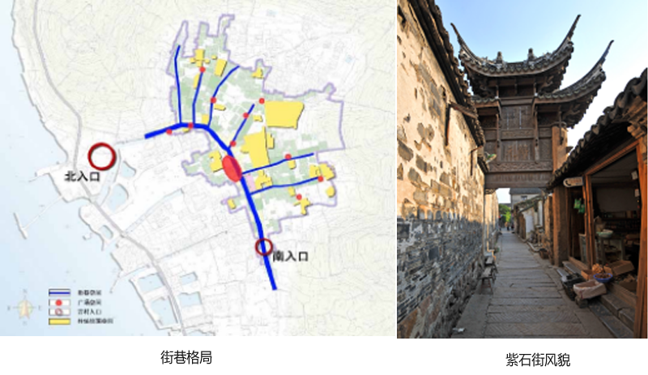
- 左图以蓝色突出主巷骨架，标北入口、南入口与若干节点；可比对街巷与滨湖一侧的关系。
- 右图是跨巷的木构过街楼，不能替代解元、会元、探花三座石牌坊的造型证据。
- 组合图无坐标、可读比例尺，不能据此直接定位WGS84顶点。
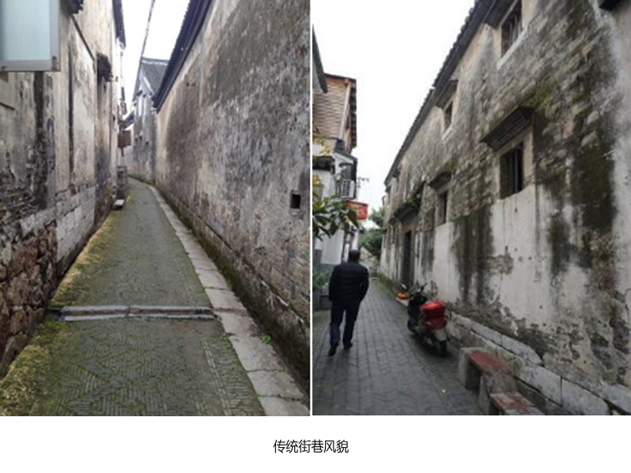
- 可见高墙围合的窄巷、石板/石条路缘、门窗与局部坡阶，可作街巷材质和空间比例参考。
- 原图未逐幅标明确切巷名，不能将两幅都确定标为紫石街，也不能以行人推算精确宽度。
- 图1有北箭头和0–150 m比例尺；红线标一街六巷，蓝线标水岸，橙线为环山公路。
- 可辨紫石街、文宁巷、康庄巷及惠和堂位置；村落西侧为太湖，三个港道分别通向湖侧。
- 这是2019论文中的示意地图，未给CRS、基准点或测绘精度；可做历史相对空间关系，不输出精确WGS84线形。
待补信息
- 主街准确起讫点、2026现状中心线与转折点。
- 解元、会元、探花三坊逐座坐标、实际排列与间距。
- 三坊正面/背面/侧面完整清晰照片和构件尺寸。
- 文献“约里许”的长度解释与现存可游览路段长度。
来源目录与检索记录
- 古镇古村系列——吴中区陆巷村：太湖明珠，宰相故里 ↗苏州市地方志工作办公室 · 2026-09-24 · 核查 2026-10-23 · government-local-history
- 苏州市东山镇陆巷村陆巷 ↗江苏省住房和城乡建设厅主办·农房建设服务网 · 2020-08-21 · 核查 2026-10-23 · government-hosted-planning-and-village-archive-summary
- 社区参与模式下的传统村落旅游空间生产及影响初探——基于苏州东山陆巷古村的调研 ↗孔翔、吴栋、张纪娴；《世界地理研究》28(6):156–165；华东师范大学网站托管 · 2019-12 · 核查 2026-10-23 · primary-field-research-paper
- 仅使用陆巷对象；搜索存在阳谷、无锡水浒城、吴江同名紫石街，均排除。
- 已补规划来源的方向、起讫描述、文献尺度和街巷格局图；未把示意图当精确地理底图。
古村港道／驳岸与水岸空间
寒山港
陆巷古村港道，地方志有明确题注实景。新增街巷水岸格局图与寒谷渡照片，可补充港道、村落、湖岸的相对关系；“寒山浜”名称与全线对应关系仍需核定。
港道线／水面及岸线；坐标和全线待核 · 题注实景与村级归属可靠；全线/入湖接口待核
2026地方志题注为“寒山港”；2020规划摘要列三条古河道时用“寒山浜、陆巷浜、蒋湾浜”。两种名称相近，但本次未取得地名管理或测绘资料证明其全线严格等同。；2019论文图1北部蓝色港道标为寒山港（小字），并在村西侧接湖岸水系；仅可用于示意相对关系。；寒谷渡是附近古渡口/亭景的独立对象，不把渡口点直接当港道入口坐标。
客观信息与出处
- 地方志描述陆巷有三条港道向西汇入太湖，与一街六巷共同构成古村格局；正文并配有题注“寒山港”的照片。2026-09-24 · 来源直接记载
古镇古村系列——吴中区陆巷村：太湖明珠，宰相故里 ↗ - 规划摘要列三条古河道为寒山浜、陆巷浜、蒋湾浜，并列寒谷渡、陆巷渡、蒋湾渡三个古渡口。2020-08-21 · 来源直接记载
苏州市东山镇陆巷村陆巷 ↗ - 寒山港题注照片可见石驳岸、窄水道、步道护栏、临水建筑和后方山体；只是一个视段。影像拍摄日期未注明 · 图像观察
古镇古村系列——吴中区陆巷村：太湖明珠，宰相故里 ↗ - 论文记2007年整治中疏浚寒山港，并绘村落水岸格局；这些资料只说明历史整治与相对水系，未给现状水位或断面。2019-12 · 来源直接记载
社区参与模式下的传统村落旅游空间生产及影响初探——基于苏州东山陆巷古村的调研 ↗ - 新增图中寒谷渡临水亭廊、栏杆和沿水步道可作邻近水岸构件参考；不能替代寒山港全线现状照片。影像拍摄日期未注明 · 图像观察
苏州市东山镇陆巷村陆巷 ↗
参考图与空间特征

- 可见港道、石驳岸、两岸步道与民居、远处山体。
- 用于水道—岸线—房屋的关系；不据单幅照片推断港道全线。
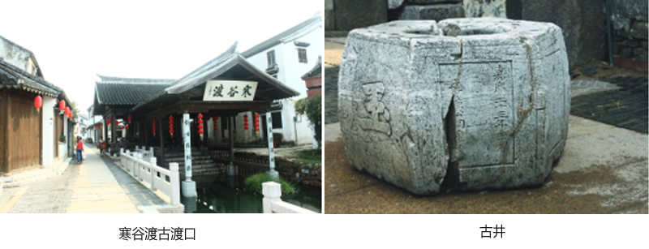
- 左图屋面山墙处可读“寒谷渡”，可见临水亭廊、护栏、石板步道与水面。
- 右为古井近景，原图组合不提供其与港道的精确距离；不能把古井或渡口自动吸附到港道端点。
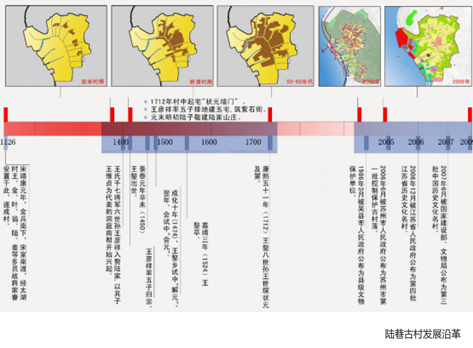
- 图组概示聚落、湖侧水道与道路在历史阶段中的关系；最右两幅标2000年前、2009年。
- 图很小且有时序概化，不以其恢复寒山港现状岸线或精确拓扑。
- 图1有北箭头和0–150 m比例尺；红线标一街六巷，蓝线标水岸，橙线为环山公路。
- 可辨紫石街、文宁巷、康庄巷及惠和堂位置；村落西侧为太湖，三个港道分别通向湖侧。
- 这是2019论文中的示意地图，未给CRS、基准点或测绘精度；可做历史相对空间关系，不输出精确WGS84线形。
待补信息
- 寒山港与寒山浜的地名对应、法定起讫及全线范围。
- 水道与太湖的实际连通接口、桥涵/闸口、现状岸线和中心线。
- 可靠的坐标系、断面宽度、水位及岸顶高度。
- 从港内向湖侧、从湖口向村内的成组实景和桥涵特写。
来源目录与检索记录
- 古镇古村系列——吴中区陆巷村：太湖明珠，宰相故里 ↗苏州市地方志工作办公室 · 2026-09-24 · 核查 2026-10-23 · government-local-history
- 苏州市东山镇陆巷村陆巷 ↗江苏省住房和城乡建设厅主办·农房建设服务网 · 2020-08-21 · 核查 2026-10-23 · government-hosted-planning-and-village-archive-summary
- 社区参与模式下的传统村落旅游空间生产及影响初探——基于苏州东山陆巷古村的调研 ↗孔翔、吴栋、张纪娴；《世界地理研究》28(6):156–165；华东师范大学网站托管 · 2019-12 · 核查 2026-10-23 · primary-field-research-paper
- 保留“寒山港/寒山浜”来源差异，aliases未将“寒山浜”强行写为已核定同义词。
- 使用机构题注照片及带北箭头/比例尺的研究示意图；未从照片猜经纬度、流向或全线。